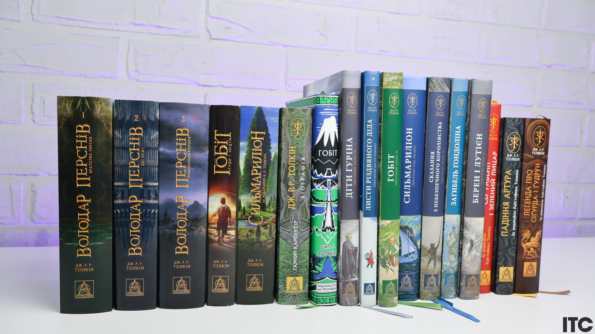
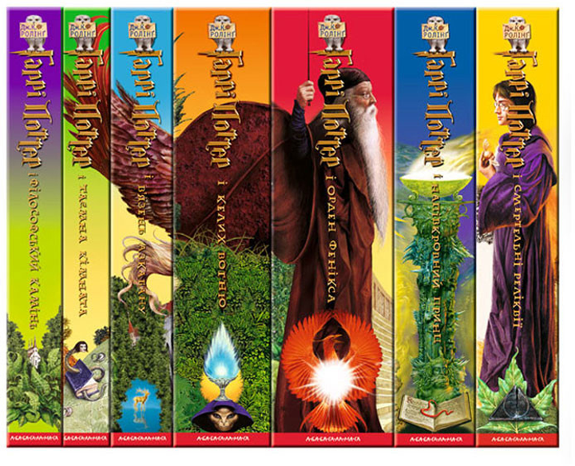
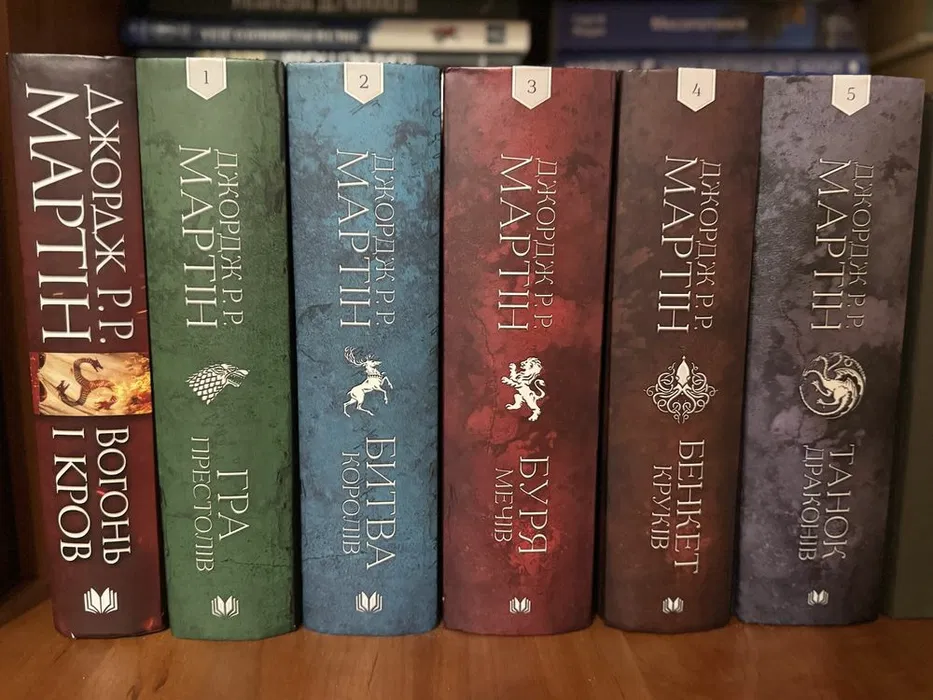
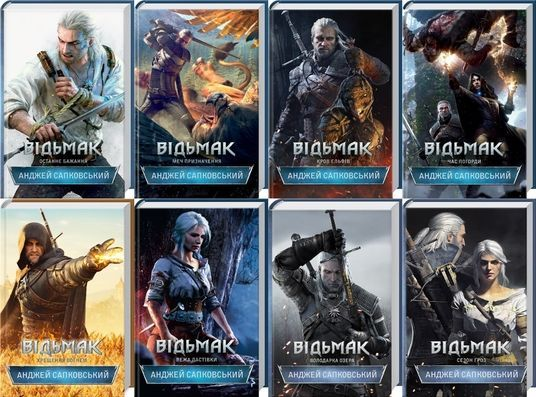

Ласкаво просимо до сайту про популярні фентезійні серії книг |
|||
|
Фентезі – це жанр, де магія оживає на сторінках книг. Однією з найпопулярніших серій є "Володар Перснів" Дж.Р.Р. Толкіна. Ця епічна історія про хобітів, ельфів та боротьбу зі злом зачаровує мільйони. |
Інша класика – "Гаррі Поттер" Дж.К. Роулінг. Історія про хлопчика-чарівника, який бореться з Волдемортом. Серія складається з семи книг, кожна з яких повна пригод. |
"Гра Престолів" Джорджа Р.Р. Мартіна – це темне фентезі. Політичні інтриги, дракони та боротьба за залізний трон. Серія відома своєю непередбачуваністю та складними персонажами. |
|
|
"Відьмак" Анджея Сапковського – польська фентезі-класика. Історія про Ґеральта з Рівії, мисливця на монстрів. Серія поєднує фольклор, магію та моральні дилеми. |
|||
Досліджуйте більше про фентезійні світи |
|||